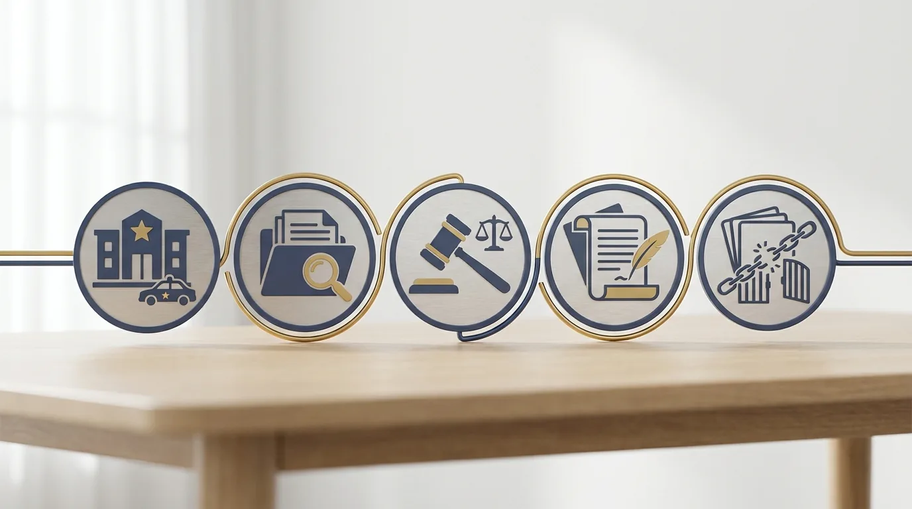
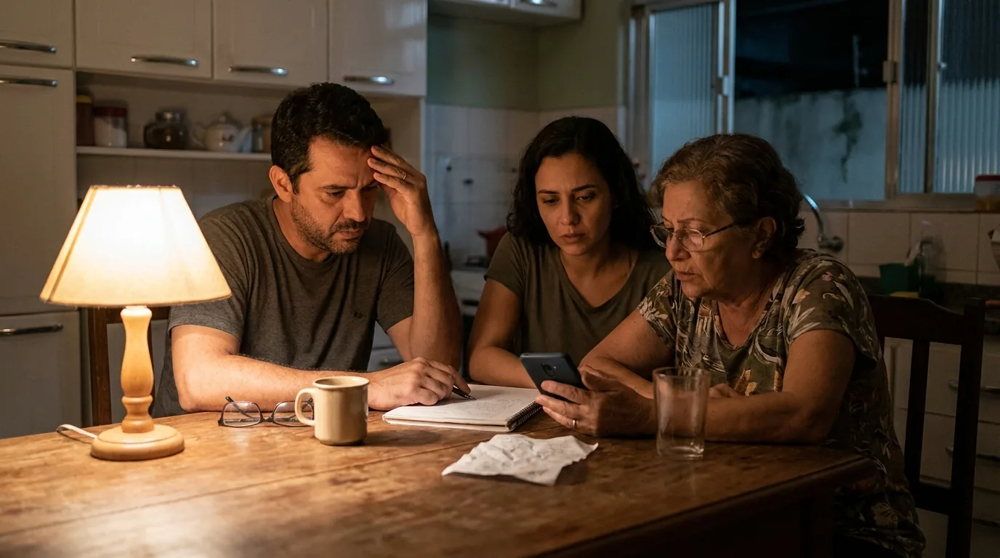
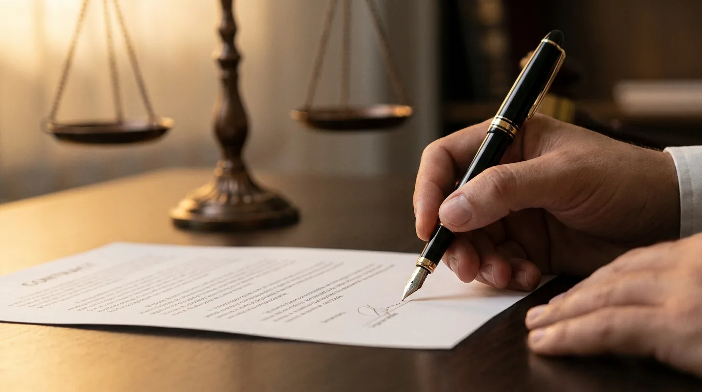

Quanto Custa um Advogado Criminalista em Florianópolis
Quem pesquisa quanto custa um advogado criminalista quase nunca está em um momento tranquilo. Em geral, alguém da família acabou de ser preso, recebeu uma intimação ou descobriu que é investigado. A pergunta sobre o preço vem junto com a pressa e com o medo de fechar um valor errado, para mais ou para menos.
Esse medo tem fundamento. A internet está cheia de números soltos, de "a partir de" enganosos e de promessas que nenhum profissional sério faria. Ao mesmo tempo, a família precisa decidir rápido, muitas vezes de madrugada, sem nunca ter contratado um advogado criminalista na vida.
A resposta honesta é que não existe preço único. Os honorários criminais variam conforme a fase do caso, a complexidade dos fatos, a urgência do atendimento e a dedicação que a defesa vai exigir. Um acompanhamento de flagrante durante a madrugada custa diferente de uma defesa completa em ação penal que vai durar anos.
Este guia explica como esse valor é formado na prática. Você vai entender o que a tabela da OAB/SC representa, como os honorários costumam ser divididos por fase, quando a Defensoria Pública é o caminho e o que perguntar antes de assinar o contrato. Assim, a conversa com o profissional deixa de ser um salto no escuro.
O que define quanto custa um advogado criminalista
O honorário advocatício é a remuneração do trabalho de defesa. A Lei 8.906/1994, o Estatuto da Advocacia, garante ao advogado o direito de combinar esse valor com o cliente. O Código de Ética da OAB recomenda que o ajuste seja feito por escrito, com clareza quanto ao objeto, aos honorários e à extensão do serviço.
Na advocacia criminal, quatro fatores pesam mais na conta:
- Fase do caso. Defender alguém no inquérito (a investigação conduzida pela polícia, antes de existir processo) é um trabalho; sustentar a defesa em ação penal completa, com audiências e testemunhas, é outro; recorrer da sentença é um terceiro. Cada etapa costuma ter honorário próprio.
- Complexidade. Um furto simples com um único acusado exige menos horas do que uma acusação com vários réus, perícias e milhares de páginas de provas. Quanto mais denso o processo, maior o valor (mais adiante detalhamos o que costuma encarecer um caso na prática).
- Urgência. Prisão em flagrante não escolhe hora. O atendimento imediato, fora do expediente, para acompanhar o registro da prisão na delegacia (o auto de prisão em flagrante) e preparar a audiência de custódia, a apresentação do preso ao juiz em até 24 horas, costuma ter valor diferenciado pela disponibilidade que exige.
- Dedicação exigida. Casos com repercussão, com restrições impostas pelo juiz para revisar (tornozeleira, proibição de sair da cidade) ou com risco de prisão preventiva, a prisão decretada antes do julgamento, demandam petições rápidas e acompanhamento constante. Essa intensidade entra no cálculo.
O porte do escritório e a experiência do profissional também influenciam. Um criminalista com anos de atuação nas varas criminais precifica o próprio tempo de forma diferente de quem está começando. O barato, aqui, pode custar caro: uma defesa mal conduzida nas primeiras 24 horas é difícil de consertar depois, como mostramos no guia sobre prisão em flagrante.
Atenção: desconfie de quem promete resultado. O Código de Ética da OAB proíbe o advogado de garantir absolvição ou liberdade, porque a decisão é sempre do juiz. O que um bom criminalista oferece é trabalho técnico, estratégia e dedicação, nunca promessa.
A tabela da OAB/SC como piso de referência
Cada seccional da OAB publica uma tabela de honorários com valores mínimos sugeridos para os atos da advocacia. Em Santa Catarina, a tabela da OAB/SC serve de referência para a categoria e ajuda o cliente a perceber quando uma proposta está fora da realidade, para baixo ou para cima.
Dois cuidados na leitura. Primeiro, a tabela traz o piso, não o teto: o advogado não deve cobrar menos do que ela indica, mas pode cobrar mais conforme a complexidade. Segundo, os valores são atualizados periodicamente, então o número exato deve ser conferido na versão vigente no momento da contratação.
Cobrar muito abaixo da tabela, aliás, é sinal de alerta. Além de infração ética por aviltamento de honorários, o desconto agressivo costuma vir acompanhado de atendimento em escala, com pouco tempo dedicado a cada processo. Em matéria criminal, em que o bem em jogo é a liberdade, volume e qualidade raramente andam juntos.
A tabela também organiza a conversa. Quando o advogado criminalista apresenta a proposta, você pode pedir que ele indique a que itens da tabela o serviço corresponde. Essa transparência é um bom termômetro da seriedade do escritório.
E se o orçamento estiver apertado? Fale isso abertamente na primeira conversa. Escritórios sérios preferem ajustar o escopo (contratando primeiro só a fase de urgência, por exemplo) a perder o cliente para uma promessa milagrosa. O que não dá para fazer é escolher a defesa da liberdade de alguém pelo critério exclusivo do menor preço, como quem compara cotações de um produto de prateleira. Processo penal não tem segunda chamada: cada audiência acontece uma vez.
Honorários por fase do processo penal
O processo penal brasileiro, regido pelo Código de Processo Penal, se desenvolve em etapas. A contratação costuma acompanhar essa divisão, e é isso que permite pagar a defesa aos poucos, conforme o caso avança.
| Fase | O que o advogado faz | Como o honorário costuma funcionar |
|---|---|---|
| Flagrante e custódia | Atendimento imediato na delegacia, análise do auto, atuação na audiência de custódia | Valor próprio, com adicional de urgência |
| Inquérito policial | Acompanhamento da investigação, defesa em depoimentos, pedidos à autoridade | Valor fechado para a fase |
| Ação penal em 1º grau | Resposta à acusação, audiências, testemunhas, alegações finais | O contrato de maior valor, muitas vezes parcelado |
| Recursos | Recurso contra a sentença ao Tribunal de Justiça de Santa Catarina (TJSC) e aos tribunais superiores | Contratado à parte, por recurso |
| Execução penal | Progressão de regime, livramento condicional, benefícios | Valor por pedido ou acompanhamento mensal |
Essa divisão protege os dois lados. O cliente não paga adiantado por um processo que talvez nem exista, já que boa parte dos inquéritos termina arquivada. O advogado criminalista, por sua vez, recebe pelo trabalho efetivamente contratado em cada etapa.
A fase de investigação também merece atenção: ser chamado para depor não é detalhe, e comparecer sem preparo pode transformar testemunha em investigado. Explicamos esse cenário no artigo sobre o que fazer ao ser intimado a depor. O custo de uma orientação nessa hora é pequeno perto do custo de uma palavra mal colocada no depoimento.
Já a execução penal merece uma palavra à parte, porque muita família imagina que a defesa termina na sentença. Termina nada. Depois da condenação começa outra disputa: progressão de regime, remição (cada dia de trabalho ou estudo na prisão desconta parte da pena), livramento condicional (terminar de cumprir a pena em liberdade, sob condições) e saídas temporárias. Cada benefício depende de pedido bem instruído, e um advogado criminalista atento a essa fase costuma encurtar o tempo de prisão de forma perfeitamente legal. O honorário aqui funciona por pedido ou por acompanhamento mensal, e tende a ser menor que o da ação penal.

Urgência: o custo de uma prisão fora de hora
A prisão em flagrante concentra as decisões mais sensíveis do processo em pouquíssimas horas. Entre a voz de prisão e a audiência de custódia, o prazo legal é de 24 horas. Nesse intervalo, o advogado precisa acessar o auto de prisão, conversar com a família, reunir documentos e preparar os argumentos que podem definir se a pessoa responde ao processo em liberdade.
Por isso o atendimento de urgência tem preço diferenciado. Não se trata só da inconveniência do horário: é a responsabilidade de tomar decisões técnicas imediatas, com informação incompleta e sem margem para erro. Ao comparar propostas, considere o que está incluído nesse primeiro atendimento, e não apenas o número final.
O que encarece um caso criminal
Alguns elementos aumentam o trabalho da defesa de forma previsível, e conhecê-los ajuda a entender a proposta que chega. Processos com vários réus exigem que o advogado criminalista acompanhe a estratégia de todos os envolvidos, porque a linha de defesa de um corréu pode atingir o outro. Casos com perícia técnica, como os que envolvem exames de local, laudos contábeis ou quebra de dados, pedem análise especializada e, às vezes, a contratação de assistente técnico. Acusações com pena alta, por sua vez, elevam o risco e a responsabilidade de cada decisão.
A distância também conta. Se o processo corre em outra cidade (outra comarca, no termo técnico), deslocamentos e diárias entram na conta. E há o fator tempo: um caso que se arrasta por anos, com audiências remarcadas e recursos da acusação, consome muito mais horas do que a proposta inicial poderia prever. Por isso, contratos bem escritos delimitam o que está incluído em cada fase.
Advogado particular ou Defensoria Pública
Nem toda família consegue arcar com honorários, e o sistema prevê isso. A Defensoria Pública atende, de forma gratuita, quem comprova não ter condições de pagar um advogado sem comprometer o próprio sustento. Os defensores são profissionais concursados e tecnicamente preparados, e ninguém fica sem defesa no processo penal: quando o réu não constitui advogado, o juiz nomeia um defensor para o caso.
A diferença prática está na dinâmica do atendimento. O defensor público trabalha com volume alto de processos e não escolhe os casos que recebe. O advogado criminalista particular, contratado, responde diretamente ao cliente: define a estratégia em conjunto, mantém a família informada e dedica ao processo o tempo que a complexidade exigir. É uma relação de acompanhamento contínuo, com canal aberto para dúvidas a qualquer momento.
| Ponto de comparação | Defensoria Pública | Advogado particular |
|---|---|---|
| Custo | Gratuito para quem comprova necessidade | Honorários contratados |
| Quem atende | Defensor designado conforme a comarca | Profissional escolhido pelo cliente |
| Carga de casos | Alta, definida pela demanda pública | Controlada pelo próprio escritório |
| Contato com a família | Nos atos do processo | Contínuo, durante todo o caso |
| Estratégia | Técnica, dentro do volume disponível | Personalizada, construída com o cliente |

A escolha, portanto, não é entre certo e errado. É entre o que cabe no orçamento e o nível de acompanhamento que a família deseja ter. Há ainda um ponto de atenção: quem contrata advogado particular e depois deixa de pagar não volta automaticamente para a Defensoria, então o planejamento financeiro da contratação deve ser realista desde o início.
Se a dúvida é essa aí na sua casa, uma conversa inicial ajuda a dimensionar o caso. A Mussi Advocacia & Consultoria avalia a situação, explica as fases prováveis e apresenta as condições por escrito, sem compromisso, para a família decidir com clareza.
Como funciona a contratação na prática
A contratação séria segue um roteiro simples. Primeiro, a análise do caso: o advogado criminalista ouve o relato, examina os documentos disponíveis e identifica em que fase o problema está. Depois, apresenta a proposta de honorários por escrito, indicando o que está incluído e o que seria contratado à parte. Por fim, formaliza tudo em contrato, seguindo a boa prática que o Código de Ética recomenda.
Repare que esse roteiro independe do tamanho do escritório. Do criminalista solo à banca estruturada, a lógica é a mesma: análise, proposta por escrito e contrato. O que muda é a forma de organizar o atendimento, e é exatamente isso que as perguntas certas revelam antes da assinatura.
Algumas perguntas ajudam a comparar propostas com segurança:
- O valor cobre qual fase do processo? Audiências e recursos estão incluídos?
- Existe adicional para atendimento de urgência ou deslocamento?
- Como funciona o parcelamento e o que acontece em caso de atraso?
- Quem vai efetivamente atuar no processo e comparecer às audiências?
- As despesas do processo, como custas e cópias, ficam por conta de quem?
Sobre formas de pagamento, o mercado costuma trabalhar com entrada mais parcelas mensais, ou com valor fechado por fase. Pagamento por êxito puro, aquele em que o advogado só recebe se o resultado for favorável, é raro na área criminal e deve ser visto com cautela, porque se aproxima da promessa de resultado que a ética profissional veda.

Checklist antes de assinar: proposta por escrito, contrato detalhando as fases cobertas, identificação do responsável técnico com número da OAB, canal de contato definido e recibo de cada pagamento. Se algum desses itens faltar, pergunte o motivo antes de fechar.
Um alerta final sobre economia mal calculada: trocar de advogado no meio do processo é possível, mas custa tempo e dinheiro, porque o novo profissional precisa estudar tudo desde o começo e os honorários já pagos não retornam. Escolher com calma na primeira vez sai mais barato do que corrigir a escolha depois.
E acompanhar o trabalho de perto é o que evita chegar a esse ponto. Para isso, ajuda conhecer os direitos de quem foi preso: a família que sabe o básico consegue conversar com a defesa em pé de igualdade e perceber cedo se algo não vai bem.
Se você precisa de um advogado criminalista em Florianópolis e quer entender quanto custaria o seu caso específico, a equipe do advogado José Lucas Mussi, OAB/SC 42.936, analisa a situação e apresenta uma proposta transparente, item a item. O primeiro passo é uma conversa, e ela não obriga a nada.
Perguntas frequentes sobre honorários criminais
Existe um preço fixo para advogado criminalista?
Não. Os honorários do advogado criminalista variam conforme a fase do processo, a complexidade do caso, a urgência e a experiência do profissional. A tabela da OAB/SC indica valores mínimos de referência, mas o número final é sempre combinado em contrato entre o cliente e o advogado.
A primeira consulta com o criminalista é paga?
Depende do escritório. Alguns cobram pela consulta, outros oferecem a avaliação inicial sem custo. O importante é confirmar antes da reunião. Na Mussi Advocacia, a conversa inicial serve para entender o caso e apresentar as condições antes de qualquer compromisso.
Posso parcelar os honorários do advogado criminalista?
Sim, o parcelamento é prática comum na advocacia criminal, em geral com uma entrada e mensalidades ao longo da fase contratada. As condições variam de escritório para escritório e devem constar por escrito no contrato de honorários.
Justiça gratuita cobre os honorários do meu advogado?
Não. A gratuidade de justiça isenta o beneficiário das custas processuais cobradas pelo Estado, mas não paga o advogado particular que ele contratou. Quem não pode arcar com honorários deve procurar a Defensoria Pública, que presta assistência jurídica integral e gratuita.
O que acontece se eu não tiver advogado no processo criminal?
Ninguém responde a processo penal sem defesa técnica. Se o réu não constitui advogado, o juiz encaminha o caso à Defensoria Pública ou nomeia um defensor dativo, pago pelo Estado. Ainda assim, constituir uma defesa de confiança desde o início permite construir a estratégia com mais tempo e proximidade.
Por que o atendimento de urgência em flagrante custa mais caro?
Porque concentra o trabalho mais sensível do processo em poucas horas, geralmente fora do expediente. O advogado precisa ir à delegacia, analisar o auto de prisão e preparar a audiência de custódia em até 24 horas, e essa disponibilidade imediata entra no valor.
Preço de advogado criminalista, no fim das contas, é o retrato do trabalho que o caso exige. Entenda as fases, peça propostas por escrito, use a tabela da OAB/SC como régua e escolha um profissional que explique cada passo. Se quiser começar essa conversa agora, a Mussi Advocacia & Consultoria atende Florianópolis e região.